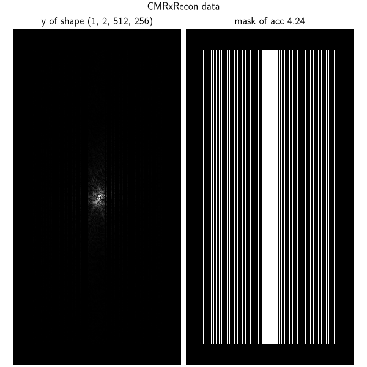
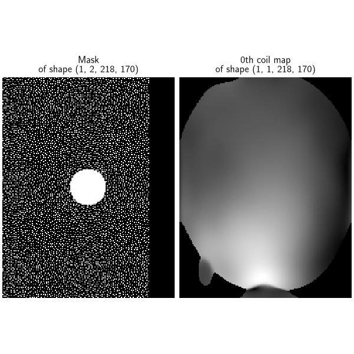
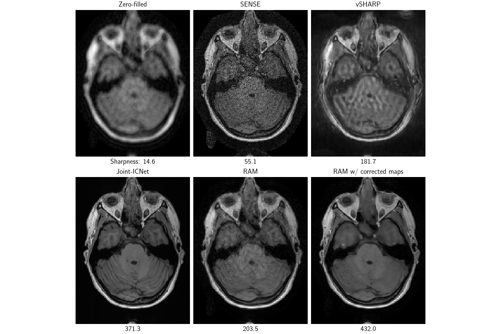
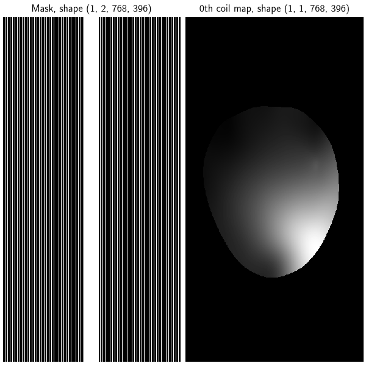
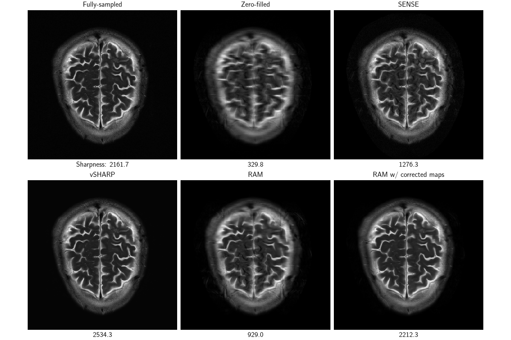

Note
New to DeepInverse? Get started with the basics with the 5 minute quickstart tutorial..
Reconstruct undersampled k-space for cardiac and brain MRI#
This demo reconstructs undersampled k-space data for 2D cardiac and brain MRI on:
single-coil cardiac cine MRI from CMRxRecon train set (
deepinv.datasets.CMRxReconSliceDataset) [1];12-coil brain k-space from Calgary-Campinas test set (
deepinv.datasets.CalgarySliceDataset) [2];16-coil brain k-space from FastMRI test set (
deepinv.datasets.FastMRISliceDataset) [3].
We demonstrate pretrained models:
Joint-ICNet [4], pretrained on Calgary data, from DIRECT;
vSHARP [5][6], pretrained on fastMRI brain, knee, prostate, and CMRxRecon cardiac data as the UNIFORM model, from DIRECT;
RAM[7], pretrained on natural images, abdominal CT and knee MRI.
Note
This example requires DIRECT (Netherlands Cancer Institute) and Python >=3.12. Install with pip install deepinv[direct].
import matplotlib.pyplot as plt
import torch
import deepinv as dinv
from torch.utils.data import DataLoader
device = dinv.utils.get_device()
metric = dinv.metric.SharpnessIndex()
Selected GPU 0 with 8561.25 MiB free memory
Cardiac MRI reconstruction#
Use a sample cardiac cine volume from deepinv.datasets.CMRxReconSliceDataset, which loads ground-truth fully-sampled recon, undersampled y, and mask.
Take the middle time-frame (the 5th time-frame out of 10) and a single slice for the demo, and construct a 2D deepinv.physics.MRI physics.
Note
For dynamic MRI reconstruction, use deepinv.physics.DynamicMRI along with a model that can reconstruct temporal data.
dinv.datasets.download_archive(
dinv.utils.get_image_url("CMRxRecon.zip"),
dinv.utils.get_cache_home() / "CMRxRecon.zip",
extract=True,
)
dataset = dinv.datasets.CMRxReconSliceDataset(
dinv.utils.get_cache_home() / "CMRxRecon", use_dict_output=True
)
batch = next(iter(DataLoader(dataset)))
x, y, params = batch["x"], batch["y"].to(device), batch["params"]
# Remove time dim
x, y = x[:, :, x.shape[2] // 2], y[:, :, y.shape[2] // 2]
mask = params["mask"].squeeze(2).to(device)
dinv.utils.plot(
{
f"y of shape {tuple(y.shape)}": y,
f"mask of acc {1 / mask.mean().item():.2f}": mask,
},
figsize=(6, 6),
suptitle="CMRxRecon data",
)
physics = dinv.physics.MRI(img_size=mask.shape[-2:], mask=mask, device=device)

File already downloaded: /local/jtachell/.cache/deepinv/CMRxRecon.zip. Skipping...
0%| | 0/1 [00:00<?, ?it/s]
100%|██████████| 1/1 [00:01<00:00, 1.02s/it]
100%|██████████| 1/1 [00:01<00:00, 1.02s/it]
/local/jtachell/deepinv/deepinv/deepinv/utils/plotting.py:479: UserWarning: This figure was using a layout engine that is incompatible with subplots_adjust and/or tight_layout; not calling subplots_adjust.
fig.subplots_adjust(top=0.75)
Perform reconstruction with pretrained models. We use the vSHARP 2D model from DIRECT, and RAM from Terris et al.[7]. We compare to the zero-filled reconstruction using the sharpness metric.
vsharp = dinv.models.DIRECTModel(
model_name="vsharp_cardiac", pretrained=True, device=device
)
ram = dinv.models.RAM(device=device, pretrained=True)
with torch.no_grad():
x_zf = physics.A_adjoint(y).cpu()
x_vsharp = vsharp(y, physics).cpu()
# Although RAM is scale-equivariant, we bring y into friendlier scale (currently it's very small)
x_ram = ram(y / x_zf.max(), physics).cpu() * x_zf.max()
dinv.utils.plot(
{"Fully-sampled": x, "Zero-filled": x_zf, "vSHARP": x_vsharp, "RAM": x_ram},
subtitles=[
f"Sharpness: {metric(x).item():.1f}",
f"{metric(x_zf).item():.1f}",
f"{metric(x_vsharp).item():.1f}",
f"{metric(x_ram).item():.1f}",
],
figsize=(12, 4),
)
Dropping unknown constructor arguments for UnetModel2d: backward_operator, forward_operator. If these were intentional config keys, the target class may be outdated or the keys may be misspelled.
Multicoil brain MRI reconstruction#
We use a 5x accelerated multicoil Calgary-Campinas brain test volume with no ground truth,
with deepinv.datasets.CalgarySliceDataset, which loads undersampled y, mask (Poisson-disk), and estimated coil maps using ESPIRiT [8].
Take a single slice for the demo, and construct a 2D deepinv.physics.MultiCoilMRI physics.
dinv.datasets.download_archive(
dinv.utils.get_image_url("demo_calgary_test_e13991s3_P01536.7.h5"),
dinv.utils.get_cache_home() / "calgary_test_5" / "e13991s3_P01536.7.h5",
)
dataset = dinv.datasets.CalgarySliceDataset(
dinv.utils.get_cache_home() / "calgary_test_5",
slice_index="middle",
transform=dinv.datasets.CalgarySliceTransform(
estimate_coil_maps=True, acs=24, espirit_crop=0.85
),
use_dict_output=True,
)
batch = next(iter(DataLoader(dataset)))
y = batch["y"].to(device)
physics = dinv.physics.MultiCoilMRI(
img_size=y.shape[-2:], **batch["params"], device=device
)
dinv.utils.plot(
{
f"Mask\nof shape {tuple(physics.mask.shape)}": physics.mask,
f"0th coil map\nof shape {tuple(physics.coil_maps[:, [0]].shape)}": physics.coil_maps[
:, [0]
],
},
figsize=(6, 6),
)

File already downloaded: /local/jtachell/.cache/deepinv/calgary_test_5/e13991s3_P01536.7.h5. Skipping...
0%| | 0/1 [00:00<?, ?it/s]
100%|██████████| 1/1 [00:00<00:00, 344.90it/s]
Perform reconstruction with pretrained models. Note that vSHARP and Joint-ICNet [5][4] estimate coil maps internally, whereas RAM uses the ESPIRiT maps.
Again, the baselines are zero-filled reconstruction, as well as the least-squares conjugate-gradient SENSE [9].
vsharp = dinv.models.DIRECTModel(
model_name="vsharp_brain", pretrained=True, device=device
)
jointicnet = dinv.models.DIRECTModel(
model_name="jointicnet_5x", pretrained=True, device=device
)
ram = dinv.models.RAM(device=device, pretrained=True)
with torch.no_grad():
x_zf = physics.A_adjoint(y).cpu()
x_sense = physics.A_dagger(y).cpu()
x_vsharp = vsharp(y, physics).cpu()
x_jointicnet = jointicnet(y, physics).cpu()
# y is very small, under the min sigma, breaking scale equivariance. Bring it into friendlier range:
x_ram = ram(y / x_zf.max(), physics).cpu() * x_zf.max()
Dropping unknown constructor arguments for UnetModel2d: backward_operator, forward_operator. If these were intentional config keys, the target class may be outdated or the keys may be misspelled.
ESPIRiT estimates coil maps with arbitrary phase per pixel, because the phases are unconstrained, leading to low spatial correlation.
Even though RAM is not trained on multicoil MRI, it performs better when the phase maps are also smooth. We use
physics.phase_correct_maps to constrain the phases to a smooth map, improving performance.
with torch.no_grad():
coil_maps = physics.phase_correct_maps(x_zf)
physics.update(coil_maps=coil_maps)
x_ram_corrected = ram(y / x_zf.max(), physics).cpu() * x_zf.max()
fig, axs = plt.subplots(2, 3, figsize=(12, 8), layout="compressed")
dinv.utils.plot(
{
"Zero-filled": x_zf,
"SENSE": x_sense,
"vSHARP": x_vsharp,
},
subtitles=[
f"Sharpness: {metric(x_zf).item():.1f}",
f"{metric(x_sense).item():.1f}",
f"{metric(x_vsharp).item():.1f}",
],
fig=fig,
axs=axs[:1],
show=False,
)
dinv.utils.plot(
{
"Joint-ICNet": x_jointicnet,
"RAM": x_ram,
"RAM w/ corrected maps": x_ram_corrected,
},
subtitles=[
f"{metric(x_jointicnet).item():.1f}",
f"{metric(x_ram).item():.1f}",
f"{metric(x_ram_corrected).item():.1f}",
],
fig=fig,
axs=axs[1:],
)

FastMRI brain test set#
# We use a volume from the :class:`deepinv.datasets.FastMRISliceDataset` test set where GT was provided by the organisers for computing metrics.
dinv.datasets.download_archive(
dinv.utils.get_image_url(
"demo_fastmri_brain_multicoil_test_file_brain_AXT2_200_2000341.h5"
),
dinv.utils.get_cache_home()
/ "fastmri_brain_multicoil_test"
/ "file_brain_AXT2_200_2000341.h5",
)
dinv.datasets.download_archive(
dinv.utils.get_image_url(
"demo_fastmri_brain_multicoil_test_full_file_brain_AXT2_200_2000341.h5"
),
dinv.utils.get_cache_home()
/ "fastmri_brain_multicoil_test_full"
/ "file_brain_AXT2_200_2000341.h5",
)
dataset = dinv.datasets.FastMRISliceDataset(
dinv.utils.get_cache_home() / "fastmri_brain_multicoil_test",
target_root=dinv.utils.get_cache_home() / "fastmri_brain_multicoil_test_full",
slice_index="middle",
transform=dinv.datasets.MRISliceTransform(
estimate_coil_maps=True, espirit_crop=0.85
),
use_dict_output=True,
)
batch = next(iter(DataLoader(dataset)))
x, y = batch["x"], batch["y"].to(device)
physics = dinv.physics.MultiCoilMRI(
img_size=y.shape[-2:], **batch["params"], device=device
)
dinv.utils.plot(
{
f"Mask, shape {tuple(physics.mask.shape)}": physics.mask,
f"0th coil map, shape {tuple(physics.coil_maps[:, [0]].shape)}": physics.coil_maps[
:, [0]
],
},
figsize=(6, 6),
)

File already downloaded: /local/jtachell/.cache/deepinv/fastmri_brain_multicoil_test/file_brain_AXT2_200_2000341.h5. Skipping...
File already downloaded: /local/jtachell/.cache/deepinv/fastmri_brain_multicoil_test_full/file_brain_AXT2_200_2000341.h5. Skipping...
0%| | 0/1 [00:00<?, ?it/s]
100%|██████████| 1/1 [00:00<00:00, 9.81it/s]
100%|██████████| 1/1 [00:00<00:00, 9.76it/s]
Perform reconstruction with pretrained models. Note that vSHARP estimates coil maps internally, whereas RAM uses the ESPIRiT maps.
vsharp = dinv.models.DIRECTModel(
model_name="vsharp_brain", pretrained=True, device=device
)
ram = dinv.models.RAM(device=device, pretrained=True)
with torch.no_grad():
x_zf = physics.A_adjoint(y).cpu()
x_sense = physics.A_dagger(y).cpu()
x_vsharp = vsharp(y, physics).cpu()
# y is very small, under the min sigma, breaking scale equivariance. Bring it into friendlier range:
x_ram = ram(y / x_zf.max(), physics).cpu() * x_zf.max()
# As before, fix the phase of the coil maps
physics.phase_correct_maps(x_zf)
x_ram_corrected = ram(y / x_zf.max(), physics).cpu() * x_zf.max()
# Crop to FastMRI FOV
x_zf = physics.crop(x_zf, shape=x.shape[-2:])
x_sense = physics.crop(x_sense, shape=x.shape[-2:])
x_vsharp = physics.crop(x_vsharp, shape=x.shape[-2:])
x_ram = physics.crop(x_ram, shape=x.shape[-2:])
x_ram_corrected = physics.crop(x_ram_corrected, shape=x.shape[-2:])
fig, axs = plt.subplots(2, 3, figsize=(12, 8), layout="compressed")
dinv.utils.plot(
{
"Fully-sampled": x,
"Zero-filled": x_zf,
"SENSE": x_sense,
},
subtitles=[
f"Sharpness: {metric(x).item():.1f}",
f"{metric(x_zf).item():.1f}",
f"{metric(x_sense).item():.1f}",
],
fig=fig,
axs=axs[:1],
show=False,
)
dinv.utils.plot(
{
"vSHARP": x_vsharp,
"RAM": x_ram,
"RAM w/ corrected maps": x_ram_corrected,
},
subtitles=[
f"{metric(x_vsharp).item():.1f}",
f"{metric(x_ram).item():.1f}",
f"{metric(x_ram_corrected).item():.1f}",
],
fig=fig,
axs=axs[1:],
)

Dropping unknown constructor arguments for UnetModel2d: backward_operator, forward_operator. If these were intentional config keys, the target class may be outdated or the keys may be misspelled.
- References:
Total running time of the script: (1 minutes 57.678 seconds)